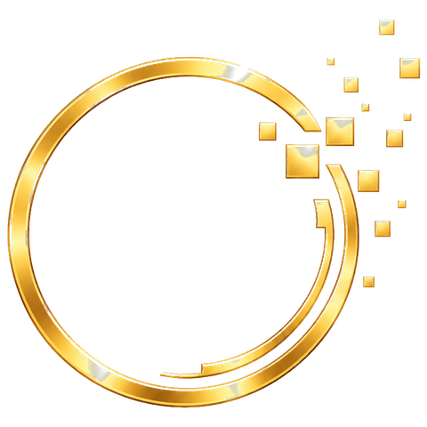

Konzultácie
Online zdravotná konzultácia, Supervízia, Astrologický profil.

ANASTASIALIGHT FOR THE FUTURE Košík (0)KONCEPT
Pokojná pastelová paleta: lesná zelená, šalviová, mätová a krémová. Levanduľová je Luciina vlastná značka (etiketa Mineral Protect) a zlato zostáva len drobným akcentom pri logu. Bordó v koncepte nie je.
Fraunces (nadmerná, kvartérna, OFL) na nadpisy a kurzíva v úvode; Figtree (OFL) na text. Obe sú voľne licencované cez Google Fonts — v produkcii ich hostingujeme u seba (rovnaké súbory ako dnes).
Táto časť webu patrí projektu ANASTASIA. Nie ako ponuka riešení, ale ako priestor, kde veci nemusia byť tlačené, vysvetľované ani riadené.
Môj svet · Zrkadielko · Obchodné podmienky
Pill tvar, minimálna výška 44 px, jemný prechod. Hierarchia: plné (lesná zelená) → mätové → levanduľové → obrys.
Jeden tvar karty s mierne asymetrickým zaoblením (22/22/22/6 px), hairline okraj a jemný posun pri prejdení myšou.
Online zdravotná konzultácia, Supervízia, Astrologický profil.
16 týždňov, ktoré môžu zmeniť váš pohľad na zdravie, energiu a starnutie.
Levanduľový akcent nesie značku, nie bordó.
16 týždňov, ktoré môžu zmeniť váš pohľad na zdravie, energiu a starnutie.